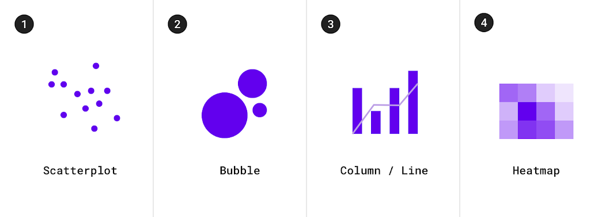
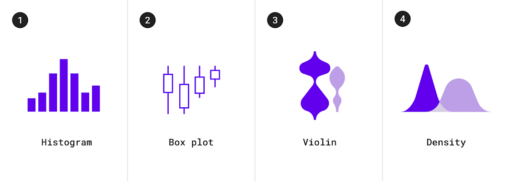
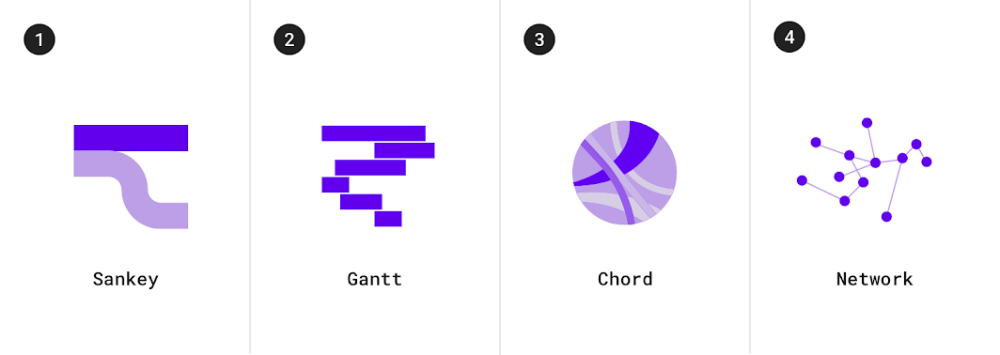
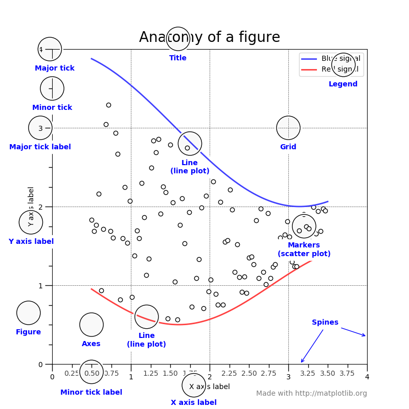
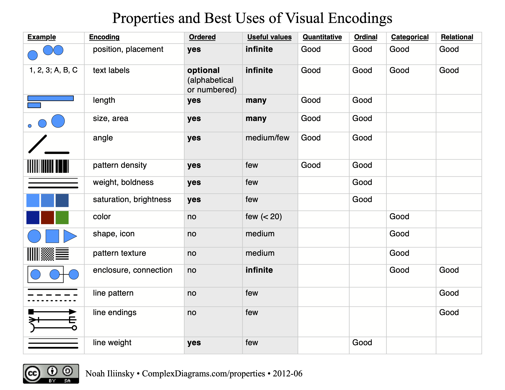

Data Visualisation for Beginners Workshop
Explore & Create Meaningful Visualisations
About Speaker
Douangtavanh Kongphaly
A data analyst who codes, visualizes and does statistically stuff on complex issues.
douangtavanh.comAgenda
Session 1: Introduction to Data Visualisation (50 mins)
- Introduction to Data Visualisation
- Types of Data Visualisation
- Elements of Data Visualisation
Break 10 mins
Agenda
Session 2: Hand-on exercise (60 mins)
- Data Processing Workflow
- Data visualisation review and best practices
- Showcase visualisations
- Hand-on exercise
Why is Data Visualisation Important?
Why is Data Visualisation Important?
A brief history of Data Visualisation
John Snow: Cholera cases in 1854

John Snow (1813-1858) was a British physician and a pioneer in the field of anaesthesia and medical hygiene. He is best known for his work in tracing the source of a cholera outbreak in Soho, London, in 1854.
Wikipedia, John SnowNot This Jon Snow

John Snow: Cholera cases in 1854

Click here to see the data

Types of Data Visualisation
Change over time
Shows how a measure changes over time, and allows you to highlight temporal trends.
Common use cases:
- Sales over time
- Stock price over time
- Temperature over time

Category comparison
Shows the comparison of categorical values where the data does not have any intrinsic order, for example, a list of products.
Common use cases:
- Income across different countries
- Popular venue times
- Sales by product
Ranking
Shows the top or bottom N values to emphasize the largest, or smallest values.
Part-to-Whole
Shows how the categories contribute to the whole value.
Common use cases:
- Gender
- Budget
- Market share
Correlation
Show the correlation between two indicators or more.
Common use cases: Correlation between Work experiences and Income, Sales and Costs, GDP and life expectancy
Distribution
Show the distribution of a measure across different categories.
Common use cases: Age distribution, Income distribution, Sales distribution
Flow
Show the flow of a measure across different categories.
Common use cases: Sales by product and region, Website traffic by source, Customer journey analysis.
Geographical Information System aka Maps
Show the geographical distribution of a measure.
Common use cases: Sales by region, Population density, and Weather patterns.
Cheat sheet

Elements of Data Visualisation
Type of Data
- Continuous: decimal, integer, GDP, number of population…
- Ordinal: best-moderate-worse, high-low…
- Category: Province, Colour, Sex
- Time series: date, time, year, month, day
- Geo-spatial: latitude, longitude, country, province
Data Types
- Numeric: integer, decimal
- Character: string, text
- Logical: boolean, true/false
- Date/time: date, time, datetime
- Factor: categorical variable
Dataset Format
- Text: CSV, TSV, JSON, XML, HTML
- Specialised: Excel, SPSS, SAS, Stata
- Database: SQL, NoSQL
- API: REST, GraphQL
- Big data: Hadoop, Spark
- Other: PDF, Image, Video, hard copy
Data Format
- Long format: each row is a single observation
- Wide format: each row is a single subject
- Hierarchical format: data is nested within other data
- Time series format: data is ordered by time
Table Structure

Tools for Data Visualisation
- Excel
- Tableau
- Power BI
- Looker Studio
- R: ggplot2, plotly, leaflet, shiny
- Python: matplotlib, seaborn, plotly, folium
- D3.js
- Vega-Lite
- Observable: Framework, Plot
Anatomy of a graph
Encoding
Data Processing Workflow
A typical data science workflow

Hadley Wickham, Mine Çetinkaya-Rundel, and Garrett Grolemund. R for data science (2e)
When creating a graph

Data Visualisation Review and Best Practices


Click here to see the data
Showcasing some examples of data visualisation
Hand-on exercise
#1 University Admission and Admission
Click here to see the data
#2 Choosing an operator for Fiber Internet
Click here to see the data
#3 Air Quality Index in Laos (UNICEF Project)
Click here to see the data
Click here to see the data
References
References
- Data visualisation | Material Design
- Stephen Few, (2007). Save the pie for the dessert.
- Michael Schermann, A reader on Data Visualization.
- Trina Chiasson, Dyanna Gregory, et al. Data + Design: A Simple Introduction to Preparing Data for Visualization.
- Noah Iliinsky. Chosing visual properties for successful visualizations.
- SAP Analytics Cloud - Data Visualization Handbook